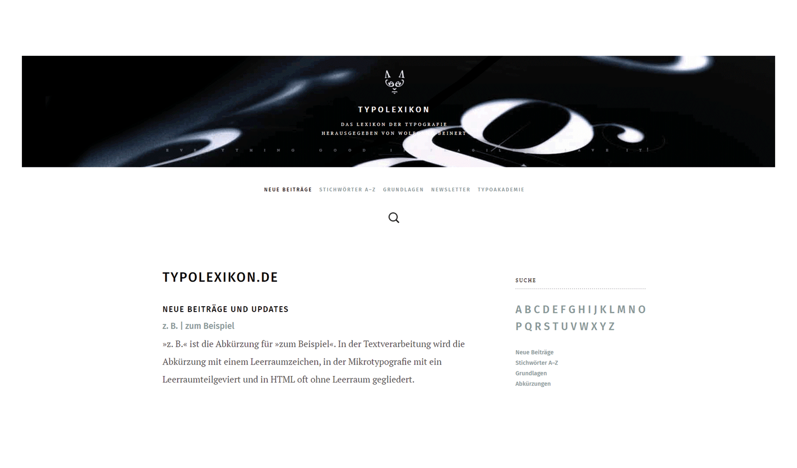
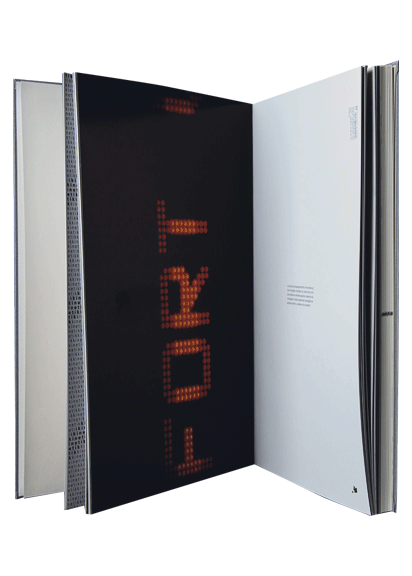
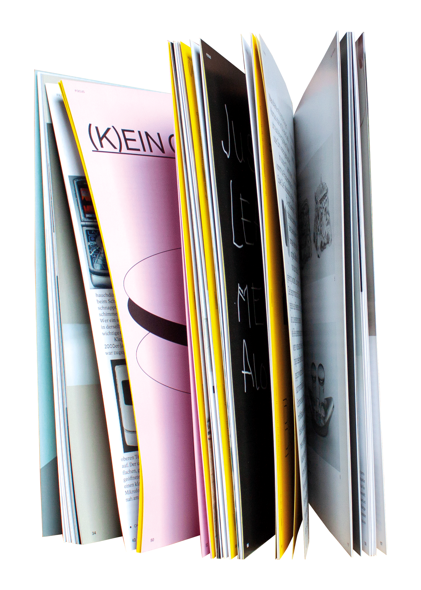
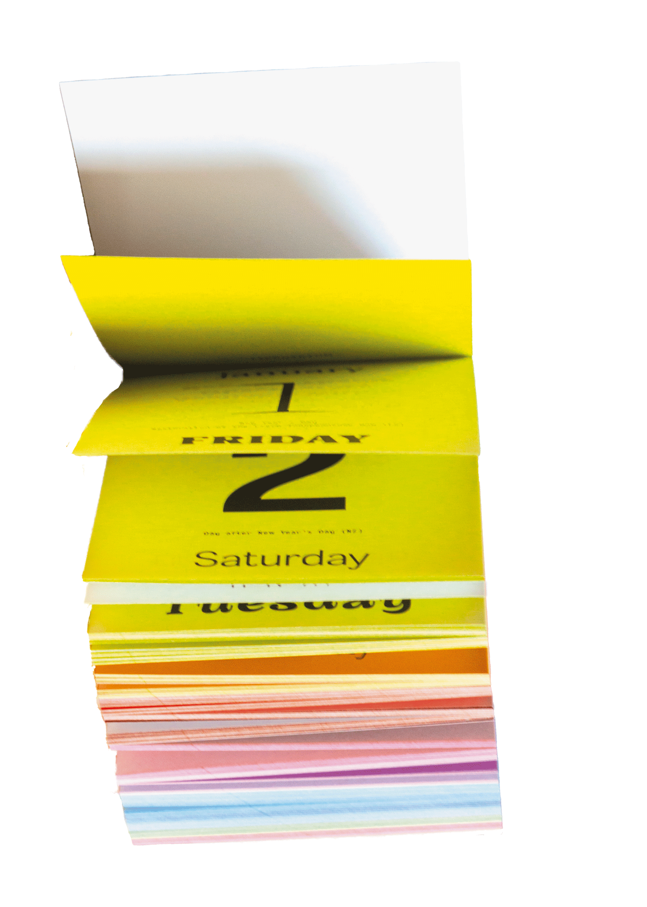

das kleine buch mit dem großem inhalt
fixierte gedanken – eine kurzgeschichte der schrift, des alphabets, der zahlen und ziffern
veruschka götz, vorwerk 8, 2011
das cover des kleinen buchs zeigt es schon, es geht um jede menge schriftzeichen, gespickt von geschichtlichen hintergründen und erstaunlichen fakten. dabei werden die großen und kleinen fragen beantwortet, die sich alltägliche benutzer von schrift aller art, vielleicht schon einmal gestellt haben. besonders beleuchtet wird die entwicklung der schrift, die heute unter anderem in unserem lateinischen alphabet sichtbar ist. die schrift ist ein einzigartiges medium, um andere bewusst an unseren gedanken teilhaben zu lassen. dadurch wird deutlich, dass es die schrift ist, die wahrscheinlich eine der bedeutendsten erfindungen der menschheit darstellt.

nicht jedes lexikon ist ein buch
www.typolexikon.de
wolfgang beinert, seit 2001 online
das umfangreiche nachschlagewerk typolexikon ging 2001 an den start und ist eine beliebte adresse, wenn man sich mehr in das thema typografie einlesen möchte. sie ist fachliteratur für typografie, schrift und auch grafikdesign, jedoch nicht an einem festen ort, wie in einer bibliothek, sondern im web und damit für viele frei zugänglich und ohne weitere kosten einzusehen. eine besonderheit bei büchern, weshalb bei komplexen themen immer wieder darauf zurückgegriffen wird, ist das vertrauen in die richtigkeit der informationen. wolfgang beinert hat es geschafft dieses vertrauen im internet auf seiner seite, ganz ohne tinte und papier, herzustellen und bietet so nicht nur fachleuten ein beliebtes nachschlagewerk, sondern ermöglicht es jedem, sich wissen über die typografie anzueignen.

das phänomen der bewegten schrift auf papier gebracht
wortgestalten – visualisierung und analyse kinetischer typografie
julia fuchs, merz akademie, 2004
bei kinetischer typografie gibt es keine grenzen der bearbeitung, buchtaben und wörter können skaliert werden, fliegen oder sich zu staub auflösen, einzig die wirkung darf nicht unterschätzt werden. auch bei dem einsatz dieses stilmittels müssen gestalterische regeln der typografie beachtet werden. in ihrem buch visualisiert und analysiert julia fuchs das stilmittel und geht dabei auf die dynamik im printbereich, auf unterschiedlichsten formen bewegter schrift in film und kunst und auf die forschung ein. dabei lässt sie dem leser raum für eigene schlüsse und interpretationen. „wortgestalten“ ist eine empfehlung für jeden, der die begeisterung für buchstaben teilt.

das designmagazin – nicht nur für typografie und designer gedacht
form
anton rahlwes, nina sieverding, verlag form, 4x pro jahr
die form gibt es seit 1957 und ist ein unabhängiges desingmagazin für den deutschsprachigen raum. nicht in jeder form findet sich ein abschnitt speziell über typografie, jedoch hält man mit der neusten ausgabe die praktische umsetzung aktueller gestaltung in der hand und kann sich inspirieren und weiterbilden. das magazin zeigt neues, sowie bekanntes, mit esinem leichten schreibstil und humor. wer gerade keine form zur hand hat, kann auch in den form podcast reinhören, der genau wie das magazin, nicht nur für designer und designerinnen interessant ist.

typografie zum abreisen
typodarium 2021
raban ruddigkeit, lars harmsen, verlag hermann schmidt
als schwarze kunst, wie sie oft noch bezeichtnet wird, ist die typografie hier nicht dargestellt. im gegenteil – die insgesamt 12 farben stehen zwar dicht nach der schrift selbst im fokus des betrachters, doch das hauptaugenmerk sind immer noch die auf 365 blättern zusammengetragene vielfalt von typografie. eine neuheit im jahr 2021 ist die gestaltung des sonntags, an dem die beiden designer, immer einen variablen font vorstellen. der kalender funktioniert als tägliche inspiration und hingucker, für designer und auch andere, die ihre tage im jahr 2021 etwas anders als sonst beginnen und zählen möchten.